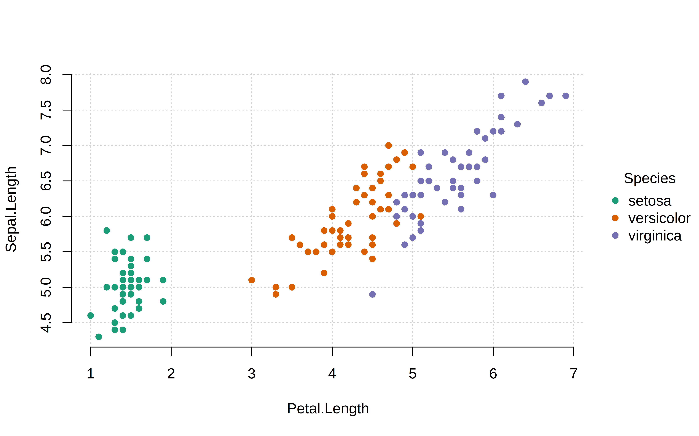
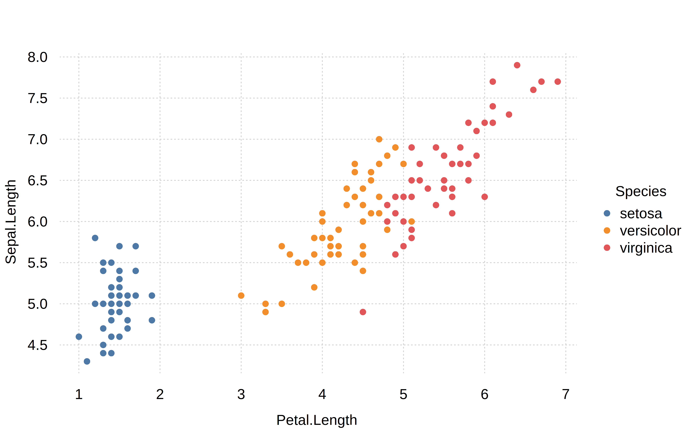
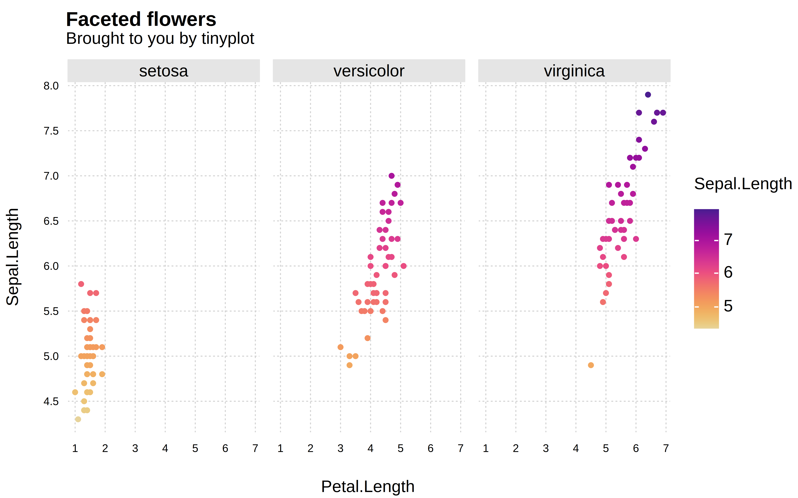

library(tinyplot)
tinyplot


What
A lightweight extension of the base R graphics system, with support for automatic grouping, legends, facets, themes, and various other enhancements.
The stable version of tinyplot is available on CRAN.
install.packages("tinyplot")Or, you can grab the latest development version from R-universe.
install.packages("tinyplot", repos = "https://grantmcdermott.r-universe.dev")Why
R users are spoiled for choice when it comes to visualization frameworks. The options, of course, include ggplot2 and lattice; say nothing of the bewildering array of extensions built around, on top of, and in between these amazing packages.1
Given the wealth of options, it is perhaps understandable that even avid R users can overlook the base R graphics system. This is unfortunate, because base R offers very powerful and flexible plotting facilities.2 The downside of this power and flexibility is that base R plotting can require a lot of manual tinkering. A case in point is plotting grouped data with an appropriate legend. Doing so with the generic plot() function can require several function calls or a loop, fiddling with your plot regions, and then generating the legend manually.
The tinyplot package aims to remove this overhead. It provides a lightweight extension of the base R graphics system that preserves the same core logic and syntax, but with numerous convenience features to make base R plotting a more user-friendly experience. For example, the core tinyplot() function—or its shorthand alias plt()—makes it easy to plot grouped datasets and generate automatic legends in a single function call. Or, you can display groups in separate facets without having to worry about manually setting plot regions. While tinyplot offers these and various other enhancements, it tries as far as possible to be a drop-in replacement for the equivalent base plotting function. Users should generally be able to swap out a valid plot() call for tinyplot()/plt() without any changes to the expected output.
It is worth emphasizing that tinyplot requires only base R. It has zero recursive dependencies and we have been careful to keep its installation size down to a minimum. tinyplot should thus provide an attractive and lightweight option for package developers (or regular R users!) who would like to produce convenient and sophisticated plots, combined with a minimal footprint.
Quickstart
The tinyplot website includes a detailed introductory tutorial, with numerous examples. But here are some quickstart examples of the package in action.
Grouped scatterplot with automatic legend:
# with(iris, tinyplot(x = Petal.Length, y = Sepal.Length, by = Species)) # atomic
tinyplot(Sepal.Length ~ Petal.Length | Species, data = iris) # formula
If you would prefer to save on a few keystrokes, you can use the shorthand plt() alias instead of typing out tinyplot() in full. Here’s the same plot with this shorthand alias, plus a few aesthetic tweaks:
plt(
Sepal.Length ~ Petal.Length | Species,
data = iris,
palette = "dark", pch = 16,
grid = TRUE, frame = FALSE
)
Speaking of aesthetic tweaks, tinyplot also provides a set of built-in themes for convenient plot customization:
tinytheme("clean2")
plt(Sepal.Length ~ Petal.Length | Species, data = iris)
Themes are persistent and will be applied to subsequent plots. For example, here is a grouped density plot:
plt(
~ Petal.Length | Species,
data = iris,
type = "density",
fill = "by",
main = "Distribution of petal lengths",
sub = "Grouped by species"
)
Grouped scatterplot with (continuous) gradient legend, combined with facet layout:
plt(
Sepal.Length ~ Petal.Length | Sepal.Length, data = iris,
facet = ~Species, pch = 19,
main = "Faceted flowers", sub = "Brought to you by tinyplot"
)
# reset the theme
tinytheme()Hopefully, these have been enough to pique your interest. Head over to the intro tutorial for many more examples, including model-based and custom plot types.
Footnotes
You could make a strong case that ggplot2, in particular, is the most influential graphics library of the last two decades, across any programming language. Both ggplot2 and lattice are built on top of the lower-level grid package, which was incorporated into the base R distribution way back in R 2.0.0.↩︎
Just type
demo(graphics)ordemo(persp)into your R console to get an idea. Or, take a look at these two excellent tutorials.↩︎